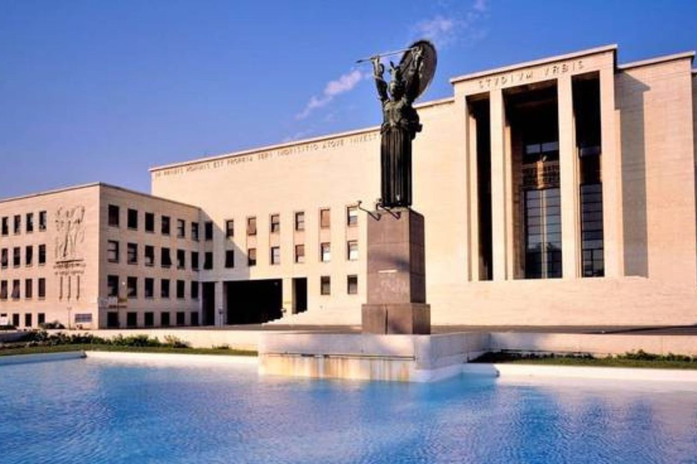
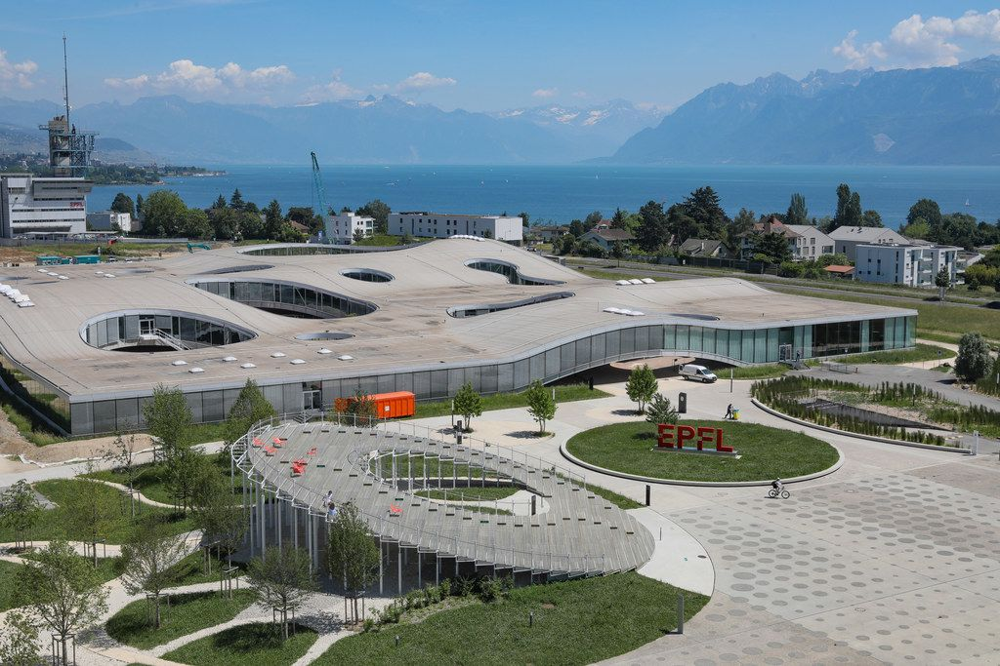

Sobre Mí
Elegí la EPFL por su prestigio internacional y excelencia académica. Mi camino no fue una decisión de un día para otro; fueron años de sueños y dedicación por entender el cosmos.
Mi profesionalidad se impulsa en criterios como la precisión científica, el equilibrio personal y la innovación tecnológica. Gracias al entorno académico que potencia la investigación de vanguardia.

Formación Académica
Astrofísico / Físico Espacial
Institución: (Grado): Sapienza Università di Roma, (Especialización): École polytechnique fédérale de Lausanne (EPFL)
Duración: 3 años de Laurea Triennale en Física (Sapienza) + 2 años de Master con especialización en Astrofísica y Cosmología (EPFL) - Modalidad Presencial
Trayectoria del Plan de Estudios:
- Ciclo física (1° y 2° año): Formación sólida en física clásica, métodos matemáticos, mecánica analítica, termodinámica y laboratorios experimentales de base.
- Ciclo astrofísica (3°, 4° y 5° año): Mecánica cuántica avanzada, astrofísica estelar, cosmología física, relatividad general y técnicas de observación astronómica.
- Prácticas e Investigación: Proyectos experimentales y de simulación numérica en laboratorios de astrofísica, culminando con el desarrollo y defensa de la tesis de grado.

Experiencia y Actualidad
Actualmente me desempeño en dos ámbitos fundamentales de la investigación y el desarrollo tecnológico, aplicando metodologías analíticas rigurosas en el estudio del cosmos:
- Sector Privado: Desarrollo y optimización de software de simulación astrofísica y modelado de datos para proyectos del sector aeroespacial.
- Sector Público: Investigación activa y análisis de datos observacionales en observatorios e instituciones públicas.
¡El análisis riguroso y el avance científico contribuyen a una sociedad más consciente, objetiva y tecnológicamente avanzada! Continúa con tus metas académicas.